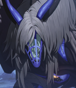

방어 태세
자신에게 #가드 1단계 부여.
#가드 : 부여된 대상의 받는 피해 감소율을 +50% 증가시킵니다.



자신에게 #가드 1단계 부여.
#가드 : 부여된 대상의 받는 피해 감소율을 +50% 증가시킵니다.
#부위의 파괴(머리) 발동 시 사용.
적 1인에게 피해, #생명 착취 1단계 부여.
자신의 공격력, 타격력, 방어력 증가.
#부위의 파괴(머리) : 아스타로트에게 특정 속성으로 BP 피해 누적 시 파괴.
#생명 착취 : 부여된 대상의 공격력, 타격력, 방어력 감소.
[MANIAC] 강화 #생명 착취 2단계 부여.
적 1인에게 강력한 피해.
[EXPERT] 강화 BP 피해에 큰 피해.
[MANIAC] 강화 사용 빈도 증가.
2라운드간 #집중.
집중 종료 시 근거리 적에게 매우 강력한 피해.
#집중 : 강력한 공격을 준비하며, 받는 피해를 감소시킵니다.
근거리에서 피격 시 자신에게 #가드 발동.
#가드 : 부여된 대상의 받는 피해 감소율을 +50% 증가시킵니다.
BP 피해가 일정량 누적되면 #부위 파괴 발생.
#부위의 파괴(왼팔) : 아스타로트에게 BP 피해 누적 시 파괴, 아스타로트가 가드 중 피격 시 부위 파괴 가속.
#부위의 파괴(머리) : 아스타로트에게 특정 속성으로 BP 피해 누적 시 파괴.